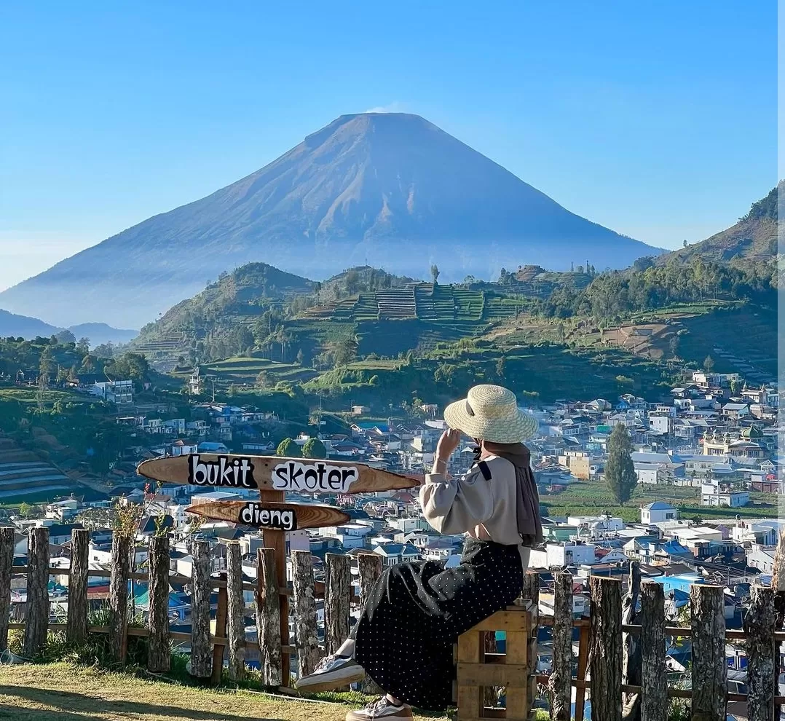
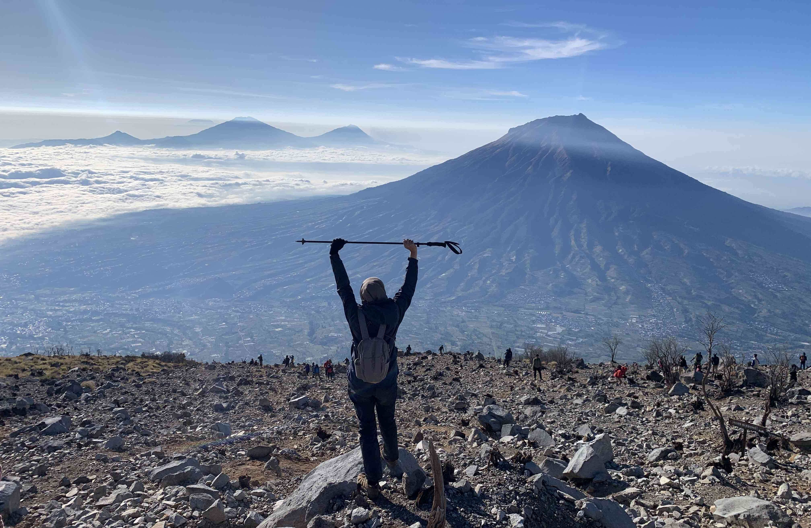

Salah satunya adalah Bukit Scooter. Berlokasi di Dieng Kulon, Kecamatan Batur, Kabupaten Banjarnegara, Jawa
Tengah. Bukit ini memiliki ketinggian 2.200 meter diatas permukaan laut.Biaya tiket masuk ke Bukit Scooter
Dieng adalah Rp 10.000 per orang, serta tersedia fasilitas seperti musala, toilet, warung kopi, area
camping, villa, dan listrik. Pengunjung juga akan dikenakan biaya parkir kendaraan
Sejarah. Telaga ini terbentuk di kaki Gunung Pakuwaja akibat letusan vulkanik. Dulu, air di telaga ini hanya
berasal dari sejumlah mata air kecil di sekitar telaga dan dari curah hujan yang cukup tinggi di telaga
ini.Dinamakan Telaga Menjer, karena telaga ini dulu terletak di Desa Menjer, tetapi desa tersebut kemudian
dimekarkan, sehingga telaga ini kini masuk ke dalam Desa Maron.Mitos yang paling dikenal dari Telaga Menjer
adalah cerita tentang pasangan yang datang bersama disebut akan berpisah. Ada cerita yang mengisahkan
pasangan yang berencana untuk mengakhiri hubungan mereka di Telaga Menjer.

Nama dari Gunung Sindoro menjadi inspirasi dari nama Kereta api Argo Sindoro, kereta api eksekutif argo yang
melayani Semarang Tawang-Gambir. Tenda pendaki gunung Sindoro ditinggalkan penghuninya yang sedang 'Attack
summit', sementara matahari pagi masih tertutup awan musim hujan di akhir bulan Januari.Nama : Gunung
Sindoro Nama Kawah : Kawah Sindoro Lokasi : Desa Katekan, Kecamatan Ngadirejo, Kabupaten Temanggung
Ketinggian : 3.155 m dpl Wilayah : Kabupaten Temanggung, dan Kabupaten Wonosobo. Kota Terdekat : Temanggung
(Tenggara), Parakan (Timur), Wonosobo (Barat). Tipe Gunung : Gunung Api strato tipe B.Dilansir dari Tribun
Pekanbaru, nama Sindoro berasal dari bahasa Sansekerta, yaitu Sundara yang artinya Indah. Selain itu, bentuk
lain dari istilah Sindoro untuk perempuan adalah Sundari yang memiliki arti cantik.